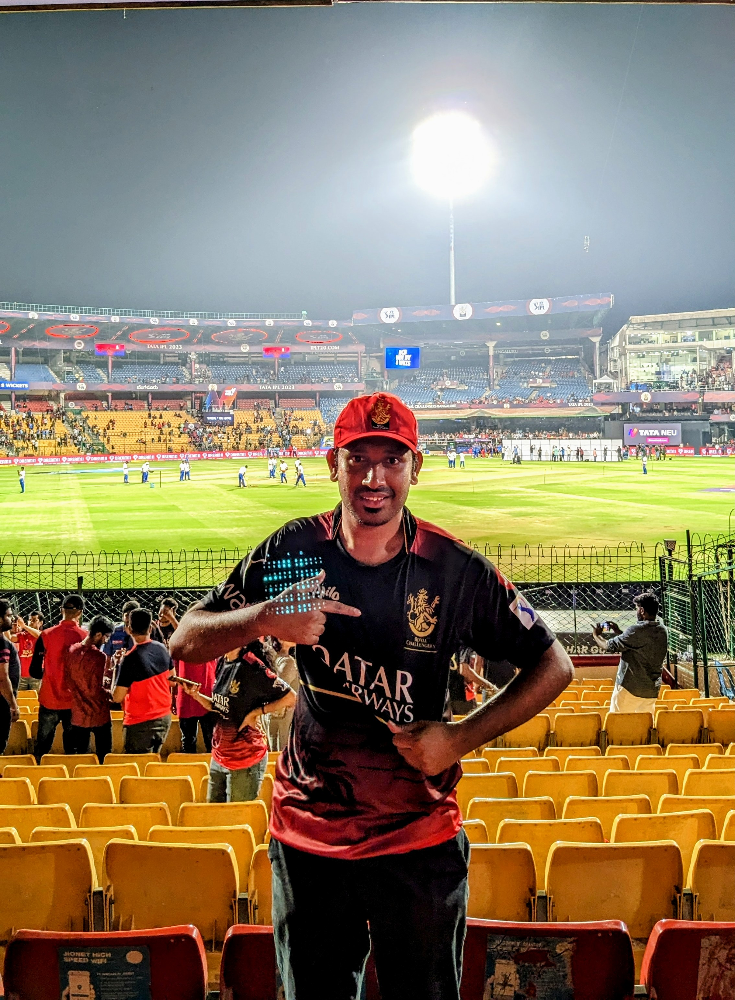

Noor Mohammed Parvez
Summary:
Results-oriented and highly skilled professional with a strong background in both Manual and Automation testing. Possess hands-on expertise in utilizing Automation tools such as Selenium, Cucumber, and API Testing. Proficient in Java Programming. Seeking a career transition into Web Development to leverage testing experience and programming skills in contributing to the development of robust and efficient web applications. Proven ability to deliver high-quality results and collaborate effectively in dynamic team environments.
Education
- M. Tech in Transportation Engineering - 2022
Maulana Azad National Institute of Technology, Bhopal
- B. Tech in Civil Engineering - 2019
G Pulla Reddy Engineering College
Work Experience
Test Engineer | Infosys Pvt. Ltd | Nov 2022 - Current
- Led the automation testing efforts by creating and executing Selenium scripts, resulting in a significant reduction in manual testing efforts and increased test coverage.
- Implemented API testing strategies to validate data integrity, system interoperability, and backend functionality, ensuring the reliability of critical business processes.
- Proficiently utilized Java programming skills to troubleshoot and enhance existing automation scripts, ensuring the adaptability of the automation framework to evolving project requirements.
- Collaborated with the development team to identify, document, and prioritize test scenarios, ensuring that the testing process aligned with project timelines and quality standards.
- Actively participated in Agile ceremonies, providing timely feedback and contributing to continuous improvement initiatives within the testing and development processes.
Skills
- Java Programming - ⭐️⭐️⭐️
- Automation Testing - ⭐️⭐️⭐️⭐️
- API Testing - ⭐️⭐️⭐️⭐️
Achievements
Publications
-
Safety Assessment at Unsignalized
T-Intersection Using Surrogate Safety Measures: A
Case Study of Bhopal City
Presented a Research paper at 14th International Conferernce on Transportation Planning and
Implementation Methodologies for Developing Countries (TPMDC) conducted by IIT-Bombay
Others